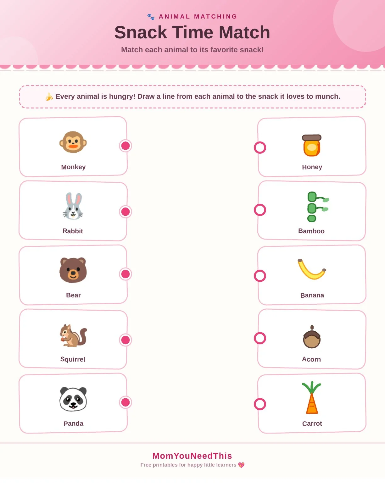

Animal Matching Activities For Kids Match Each Animal To Its Favorite Snack
Combine a love of animals with brain-building matching practice — your child will match each animal to its favorite snack — monkey to banana, panda to bamboo, and more — while learning animal names.
Quick Answer
This free printable animal matching activity helps toddlers and preschoolers practice matching with a Snack Time Match game. The worksheet shows five hungry animals — monkey, rabbit, bear, squirrel, panda — and your child draws a line from each one to its favorite snack. Download and print at home with no signup needed — a fun way to build memory, attention, and animal vocabulary at the same time.
At a Glance
- Ages: Toddlers and preschoolers
- Activity: Animal matching games, including Snack Time Match
- Skills: Matching and visual discrimination
- Format: Printable worksheets (PDF)
- Cost: Free, no signup
🐶 What Are Animal Matching Activities?
This animal matching page is a Snack Time Match: five hungry animals on one side, five snacks on the other. Your child draws lines connecting each animal to the snack it loves to munch. Along the way they practice saying animal names, making animal sounds, and thinking about what each animal eats.
📋 How To Use These Activities
Print the animal matching sheet and name each animal together first — point, say the name, and make the sound. Then let your child draw lines from each animal to its favorite snack. For younger toddlers, cut the page into cards and play a simple tabletop matching game instead of drawing lines. The print button opens the full-size page in a new tab if you prefer to print from there.

🖨️ Download Your Free Printable
Draw lines to match each animal with its favorite snack on this printable puzzle page. Print it out, grab the crayons, and munch your way through — monkey, rabbit, bear, squirrel, panda — no signup needed.
⬇️ Download Free Printable 🖨️ Print🎁 Free printable for toddlers & preschoolers
🐾 Animal Matching In Real Life
Play snack time with stuffed animals — offer a toy banana to the monkey, a carrot to the rabbit, honey to the bear, an acorn to the squirrel, and bamboo to the panda, and let your child feed each one its favorite. At the zoo or on a walk, spot animals and name them together. Real-world animal spotting makes the printable even more exciting.
💡 Why Practice Animal Matching?
Matching each animal to its snack builds visual memory and attention to detail while naturally growing vocabulary — children learn animal names, sounds, and features as they play. It is also a gentle introduction to the concentration skills they will use for puzzles, reading, and math.
📚 Keep Exploring Matching Games
Discover more free matching and memory activities, printables, and learning ideas created for busy parents.
🎁 Back to Matching & Memory Activities🔗 More Free Printables You'll Love
Keep the learning going with these related free activities.
🌙 Shadow Matching 🔍 Same & Different 🐾 Animal Habitats❓ Frequently Asked Questions
What animals are in the matching printable?
The printable is a Snack Time Match: a monkey, rabbit, bear, squirrel, and panda — match each one to its favorite snack: honey, bamboo, banana, acorn, and carrot — all drawn large and friendly for little hands and eyes.
Are these animal printables really free?
Yes — every printable on MomYouNeedThis is 100% free to download and print. No signup, no payment, just tap the download button.
Can toddlers do animal matching?
Absolutely. Start by naming the animals together and matching just two or three pairs. Even 2-year-olds love pointing to the snack when you ask “What does the monkey like to eat?”